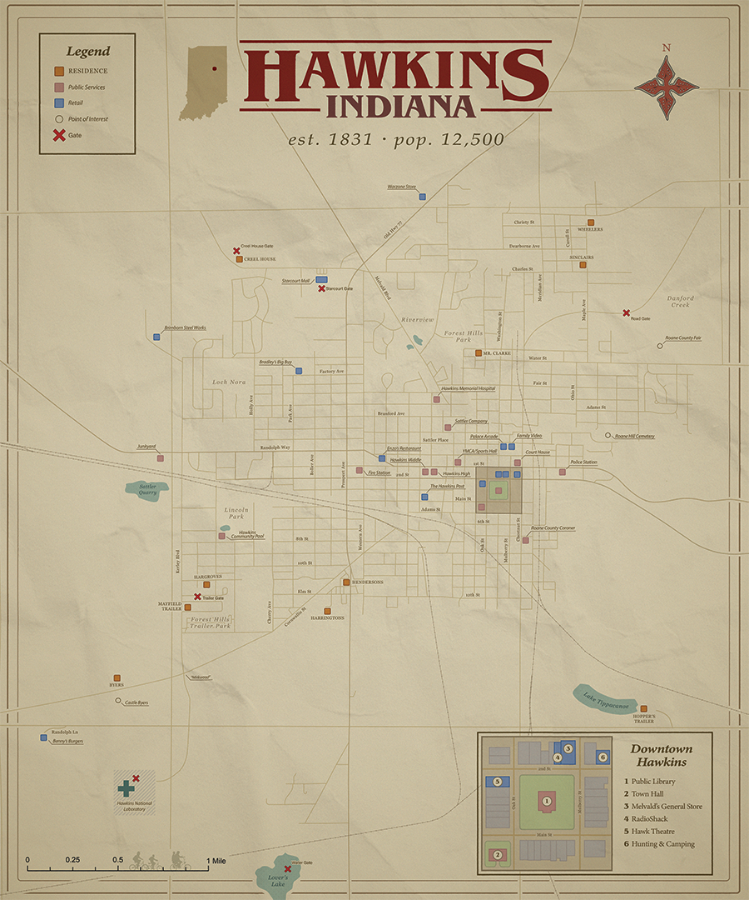
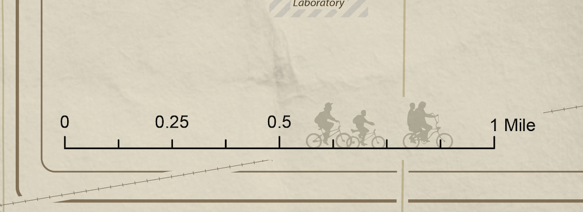
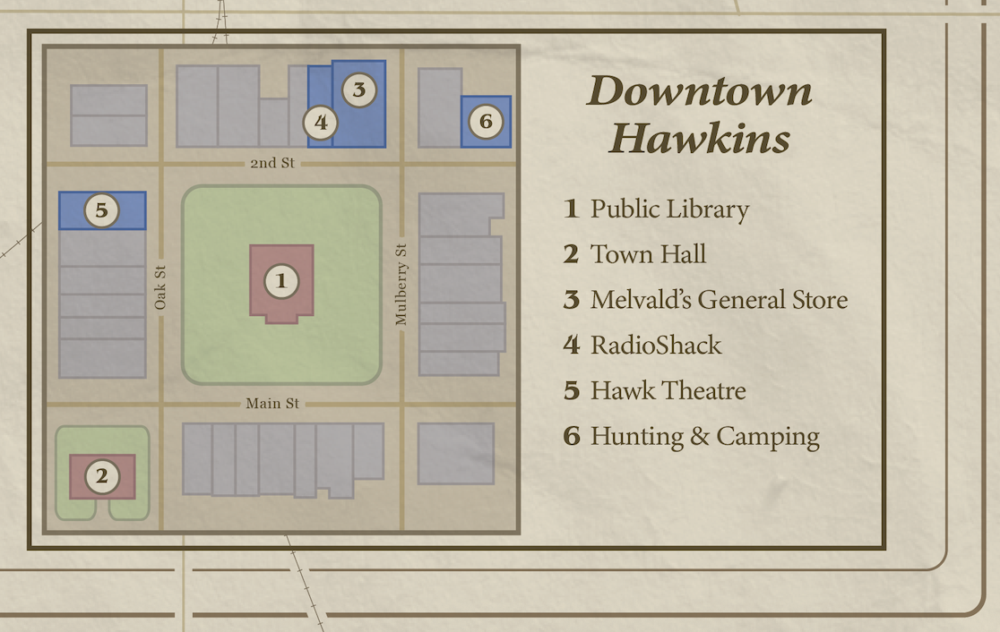
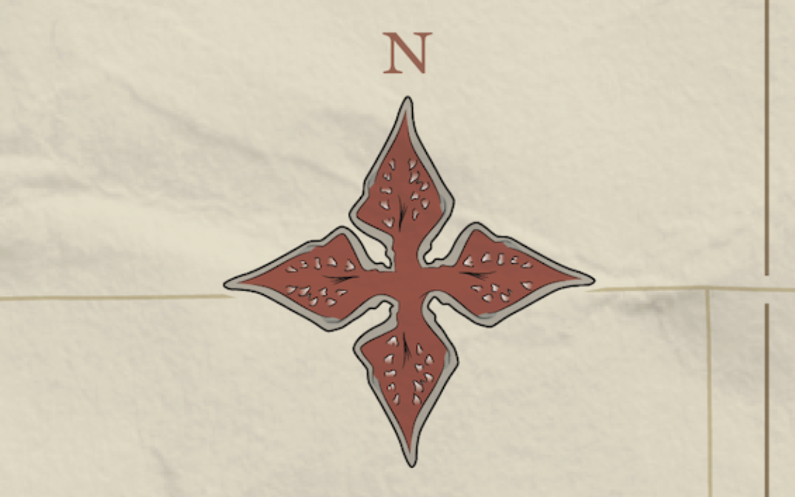

This was the final project I created for my Cartography and Geospatial Visualization course. The assignment was to design an original map that combined strong visual storytelling with something you're passionate about. I chose to recreate the fictional town of Hawkins from the TV show Stranger Things because I had always wondered how the town would realistically be laid out geographically.
This became one of the most challenging maps I have ever worked on. Since Hawkins is fictional, continuity throughout the show is not always perfectly consistent. Street names, landmarks, and distances often change slightly between episodes or seasons. For example, the show references Randolph Lane, Randolph Road, and Randolph Avenue at different points, making it difficult to determine whether these were continuity errors, alternate names, or entirely separate streets. Because of this, much of the road network and spatial organization had to be carefully inferred from dialogue, camera shots, and lots of help from the Stranger Things Wiki.
Fortunately, Hawkins is actually based on the real town of Marion. In the first season of Stranger Things, Hopper is shown drawing on a county map of Hawkins. A scanned version of this map is available online, which became the starting point for my project. First, I georeferenced Hopper’s map onto Marion in order to align the fictional town with a real geographic base. From there, I brought all of my shapefile data into Adobe Illustrator, which is where I completed the majority of the cartographic and visual design work.


